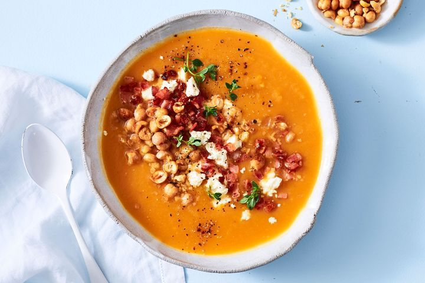

Pumpkin Soup

Ingredients
- 2 x 500g packets frozen pumpkin cubes
- 1L (4 cups) Massel Chicken Style Liquid Stock
- 80g (1/2 cup) bought diced bacon
- 70g (1/2 cup) chopped frozen onion
- 3 tsp ground cumin
- 80g feta
- Roasted lightly salted chickpeas, to serve
Steps
- Place the pumpkin and stock in a large stockpot over high heat.
Cover and bring to the boil. Cook for 4 minutes or until the pumpkin
is tender.
- Meanwhile, cook the bacon in a frying pan over medium-high heat for 3 minutes
or until starting to crisp. Transfer the bacon to a plate lined with paper towel to
drain. Add the onion to the pan and cook, stirring, for 2 minutes or until soft. Add the
cumin and cook for 30 seconds or until aromatic.
- Remove the pumpkin mixture from the heat. Add the onion mixture and use a stick blender to
blend until smooth. Ladle among serving bowls. Crumble the feta on top. Sprinkle with the bacon,
chickpeas and thyme to serve.
Home